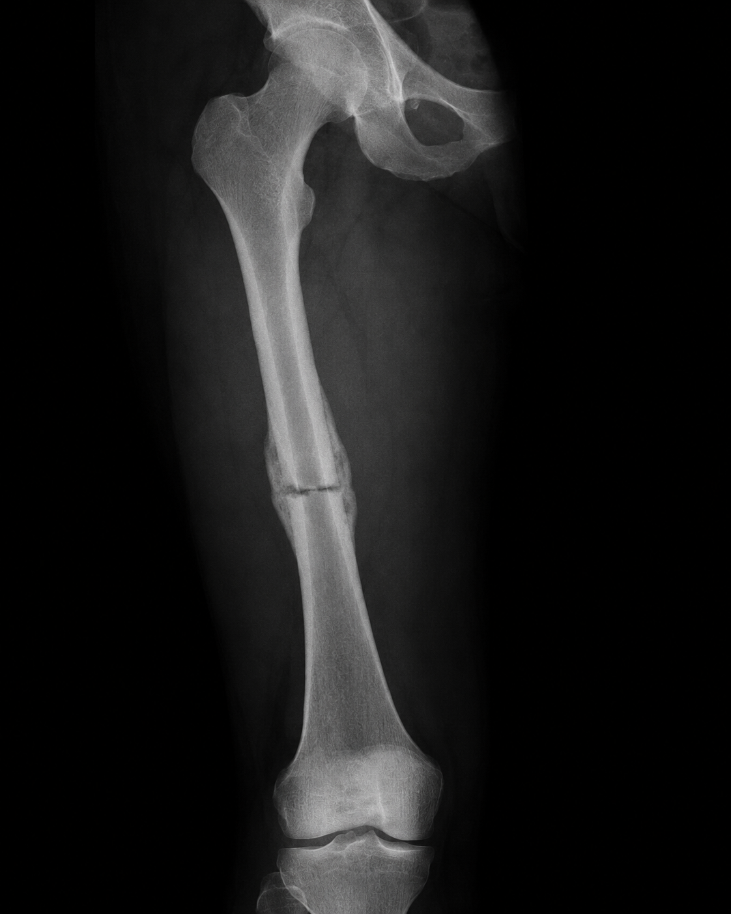
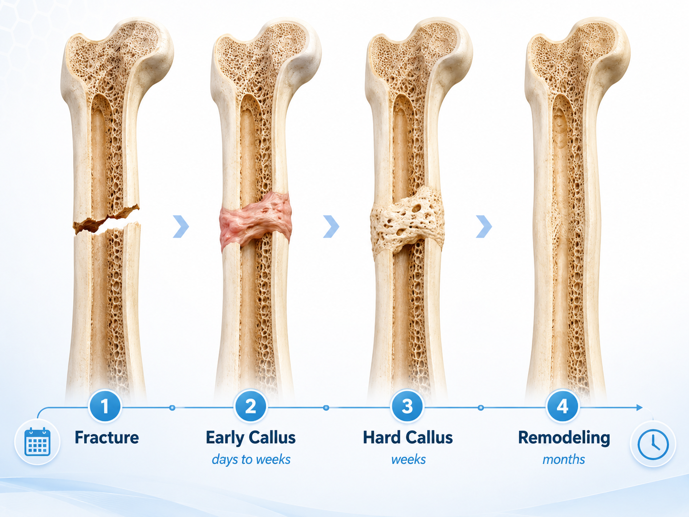

Quick answer
Most broken bones take about 6 to 8 weeks to heal enough for basic daily activity, but that is only a general rule. Some small fractures may heal faster, while larger or more complicated fractures can take several months or longer.
Bone healing depends on the bone involved, the fracture pattern, alignment, stability, blood supply, the patient’s health, and the treatment plan.
How bone healing happens
Bone is living tissue. After a fracture, the body forms early healing tissue called callus. Over time, that callus hardens into new bone, and then the bone remodels and strengthens over months.

Why healing time varies
Healing can vary based on fracture location, blood supply, fracture pattern, stability, nicotine use, diabetes, nutrition, osteoporosis, infection risk, medications, and the energy of the injury.
When to be evaluated
Significant pain after an injury, difficulty bearing weight, visible deformity, worsening swelling, numbness, tingling, an open wound near the injury, or pain that is not improving as expected should be evaluated.
Bottom line
For many patients, a broken bone takes about 6 to 8 weeks to heal enough for basic function, but complete recovery may take longer. Evaluation helps clarify the diagnosis, timeline, and safest plan.
Need a fracture checked?
If an injury is limiting your activity or recovery is not progressing as expected, an orthopedic evaluation can help clarify the next steps.
Schedule an Appointment